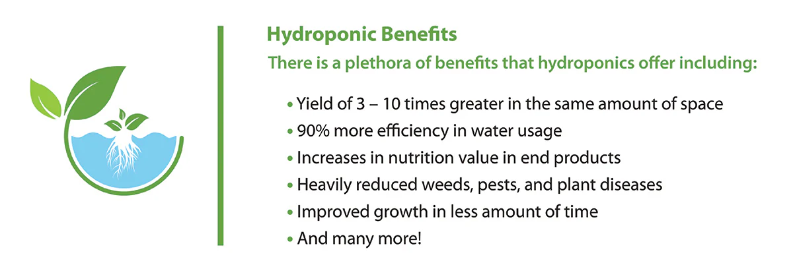

Hydroponics is the technique of growing plants using a water-based nutrient solution rather than soil

Hydroponics is a crop system that makes plants grow in a nutrient-rich water solution; in other words it does not use soil. Furthermore, the water used can be recovered and recycled, and the nutrients can be obtained from a variety of sources, including fish excrement (a technique known as aquaponics).